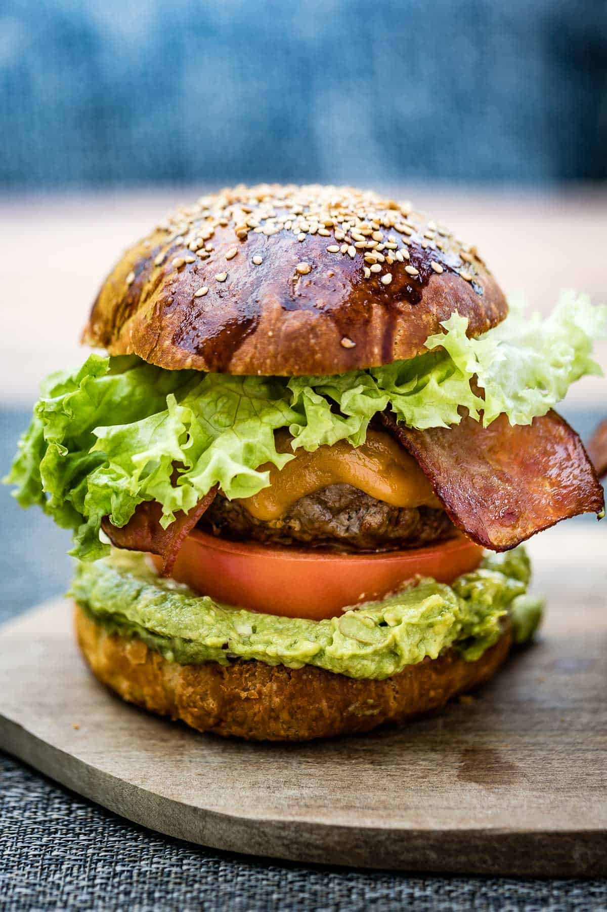

Bacon n' Avo Cheese Burger

Description
There’s something irresistible about the combination of smoky bacon, creamy avocado, and golden, bubbling cheese
melting over a perfectly grilled beef patty. The crispy saltiness of the bacon balances the buttery smoothness
of ripe avocado, while the cheese ties it all together into a rich, indulgent bite. All of it is cradled in a
soft, lightly toasted bun that soaks up the flavor without falling apart.
This Bacon & Avo Cheeseburger isn’t just a meal — it’s a moment. Whether you’re firing up the grill for a
weekend braai or treating yourself after a long day, it delivers the perfect mix of comfort and decadence. Every
mouthful is juicy, messy, and satisfying in the best possible way.
Ingredients
- Guacamole
- Patties
- Brioche Burger Buns
- Tomatoes
- Sliced Cheese
- Lettuce
Guacamole
- Garlic
- Lime Juice
- Salt
- 1 Large Avocado
Patties
- Ground Beef
- Worcestershire Sauce
- Garlic Powder
- Paprika
- Black Pepper
- Olive Oil
Steps
- Preheat your oven to 200 C and a grill to 200 C
- Prepare a pan by lining it with parchment paper and set it aside.
- Grab a large bowl. In it, mix the ground beef, Worcestershire sauce, garlic powder, paprika,
salt, and black pepper
- Grab n handful of the mixture and shape it into a patty roughly 1.5cm thick and the same
diameter as your buns.
- Move the patties to the prepared baking sheet. Cover them with plastic wrap and freeze for 30
minutes before grilling.
- Line your bacon slices on a wire rack and bake for 10 min, flip and bake for 5 more.
- In a large bowl, mix the garlic, lime juice, and salt. Halve the ripe avocados, scoop them
out, and place them into the same bowl.
- Use a fork or potato masher to mash the avocados until they reach your desired level of
creaminess. Taste the mixture and add seasoning if necessary.
- Place the ground beef on the grill for 4-5 minutes. Then, flip the patties and cook for
another four minutes, or until the center of each registers your desired temperature.
- Once the patties are cooked, move them away from direct heat and place a slice of cheese on
each. Let the residual heat melt the cheese for about 45–60 seconds. Transfer the patties to a plate, cover
loosely with aluminum foil, and let them rest for five minutes. While the burgers are resting, you can
lightly toast the buns on the grill for 1–2 minutes.
- Assemble and enjoy!! Remember your lettuce and Tomatoes and serve with fries
Home